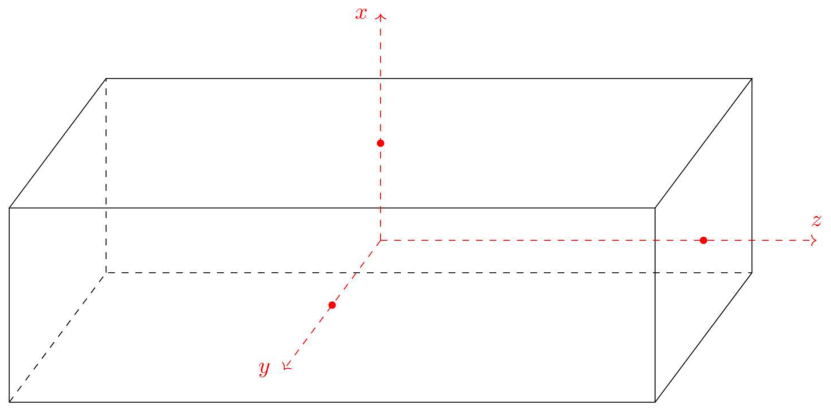
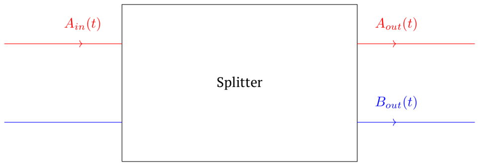
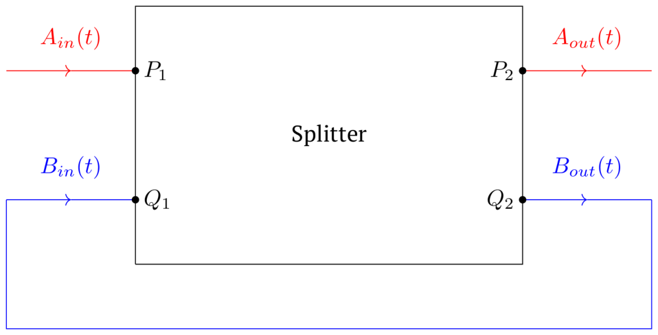
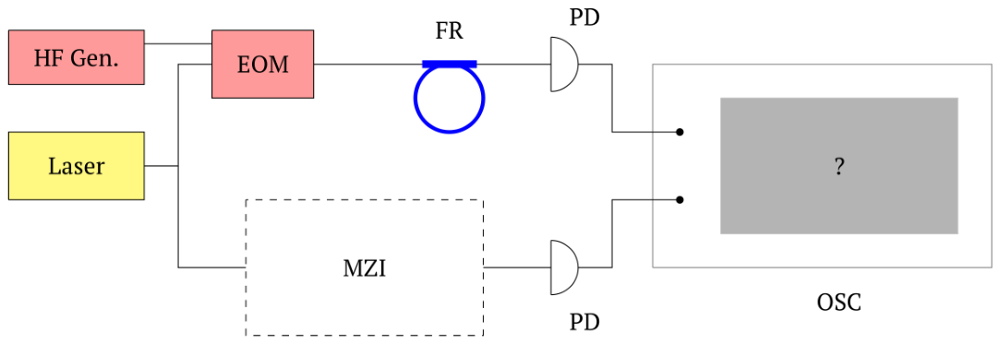
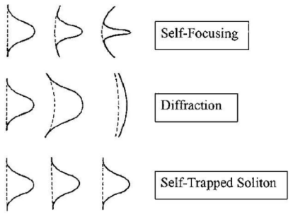

이 문제는 고정밀 주파수 측정 방법을 다룬다. 풀이 과정에서 두 가지 측정 방법, 즉 신호 변조(Part C)와 주파수 빗(frequency comb)(Part D)을 배우게 된다.
왜 더 높은 정밀도가 필요한가?
고전 물리학의 틀에서 모든 측정은 표준과의 비교이다. 주파수 표준으로서 우리는 링 광학 공진기(ring optical resonator)의 고유 주파수를 사용할 것인데, 오늘날 최고의 공진기는 링 공진기이기 때문이다. 그리고 품질이 높을수록 기준 고유 주파수의 값은 더 정확하다. Part B에서는 링 광섬유 광학 공진기를 예로 들어 링 공진기에 대해 더 배우게 된다. Part A에서는 Part B에서 다루는 공진기를 만드는 광섬유에서의 파동 전파 이론을 유도한다. 문제의 맨 끝에는 참고 자료(맥스웰 방정식과 미분 연산자)가 있다. 올림피아드 범위에 포함된 모든 물리 법칙을 알고 있다면, 문제를 푸는 데 참고 자료가 필요하지 않을 것이다.
전자기파 전파 방정식 공간의 각 점에서 전자기장은 네 개의 벡터 $\vec E(\vec r, t)$, $\vec H(\vec r, t)$, $\vec D(\vec r, t)$, $\vec B(\vec r, t)$로 기술된다—전기장 세기, 자기장 세기, 전기 변위, 자기 유도이다. 이 벡터들은 매질의 분극 $\vec P$와 자화 $\vec M$과 다음 관계로 연결된다:
\[\vec D = \varepsilon_0\vec E + \vec P,\qquad \vec B = \mu_0(\vec H + \vec M),\]여기서 $\varepsilon_0$는 전기 상수, $\mu_0$는 자기 상수이다.
문제를 풀 때 다음 근사를 사용하라:
전자기파 이론. 맥스웰 방정식, 즉 미분 형태의 패러데이 유도 법칙과 미분 형태의 자기장 세기 순환 정리(참고 자료 참조)에 회전(rot) 연산자를 적용하면, 전자기파 전파의 기본 방정식을 얻는다:
\[\Delta\vec E = \mu_0\frac{\partial^2\vec D}{\partial t^2},\qquad \Delta\vec H = \varepsilon_0\frac{\partial^2\vec B}{\partial t^2}.\]Part A, B, C에서는 분극이 전기장 세기에 선형으로 의존한다고 가정한다: $\vec P = \varepsilon_0(\varepsilon(\omega) - 1)\vec E$, 여기서 $\varepsilon(\omega)$는 매질의 유전율(dielectric permittivity)로, 보통 매질 내 전자기파의 주파수에 의존한다. 진공의 유전율은 1과 같다.
따라서 전자기파 전파 방정식은 다음 형태로 쓸 수 있다:
\[\Delta\vec E = \mu_0\varepsilon\varepsilon_0\frac{\partial^2\vec E}{\partial t^2},\qquad \Delta\vec H = \mu_0\varepsilon\varepsilon_0\frac{\partial^2\vec H}{\partial t^2}.\]
주파수 $\omega$의 평면 단색 전자기파가 $z$축을 따라 유전체 도파관(waveguide)(그림 1)을 따라 전파한다. 이 도파관은 유전 상수 $\varepsilon(\omega)$를 가진 물질로 된 직육면체이며 변의 길이는 $a$, $L_1$, $L_2$이다. $L_1, L_2 \to \infty$이고 이 문제의 어떤 특성 길이보다도 훨씬 크다.
데카르트 좌표계 $Oxyz$를 도입하자. $O$는 직육면체의 중심과 일치한다. 길이 $L_1$의 모서리는 $z$축에, 길이 $a$는 $x$축에, 길이 $L_2$는 $y$축에 평행하다. $(\hat x, \hat y, \hat z)$는 오른손 삼중쌍이다.
$y$축에 평행하게 편광된 파동을 생각하자: $\vec E \parallel \hat y$. 도파관 내 장 $\vec E$에 대한 해를 다음 형태로 찾는다:
\[\vec E(\vec r, t) = E_0\,\mathrm{Re}\left(A(x, y)\exp(i\omega t - i\beta z)\right)\hat y,\]여기서 $E_0$는 전기장의 차원을 가지고, $A(x, y)$는 도파관의 서로 다른 점에서의 장의 진폭 비와 위상 차에 대한 정보를 담은 무차원 복소량이다. 일반성을 잃지 않고 $A(0, 0) = 1$로 둔다.
또한 $L_2 \gg a$라고 하자. 그러면 $\partial A/\partial y \ll \partial A/\partial x$로 가정할 수 있으며, 따라서 $A$는 $x$에만 의존한다.
$A(x)$에 대한 해는 다음 형태로 찾을 수 있다:
\[A(x) = \begin{cases} \cos(k_{in}x), & |x| < a/2\\ C_1\exp(k_{out}x) + B\exp(-k_{out}x), & x > a/2\\ B\exp(k_{out}x) + C_2\exp(-k_{out}x), & x < -a/2 \end{cases}\]여기서 $k_{in} > 0$, $k_{out} > 0$이다.
$B$를 구하기 위해, 경계 $x = a/2$에 대한 경계 조건을 써야 한다 (경계 $x = -a/2$에 대해서는, $A(x)$가 우함수이므로 동일한 방정식을 얻는다).
이제 $\beta(\omega)$를 찾기 위한 방정식을 유도해야 한다. 이를 위해 $\vec H$에 대한 또 다른 경계 조건을 쓸 수 있다.

외부 레이저의 복사가 사극자 빔 분배기(quadrupole beam splitter)로 들어간다. 이는 두 쌍의 결합된 채널 $(P_1, P_2)$와 $(Q_1, Q_2)$을 가진 광학계이다.
복소 진폭 $A_{in}(t)$를 가지고 분배기로 들어가는 단색파는 같은 방향으로 전파하는 더 작은 진폭의 두 출력파로 분할된다. 그중 첫 번째는 입사파와 같은 쌍 채널을 따라 전파하며, 그 복소 진폭은 $A_{out}(t) = -r_sA_{in}(t)$이다. 두 번째 파동은 다른 쌍의 채널을 통해 전파하며 그 진폭은 $B_{out}(t) = it_sA_{in}(t)$이다. $Q_1$로 입사하는 파동은 $P_1$로 입사하는 파동과 유사하게 분할된다. $r_s$와 $t_s$는 양의 실수이고 $t_s \ll 1$이라고 하자.
이 분배기로 광섬유 공진기를 조립할 수 있다. 이를 위해서는 채널 $Q_1$과 $Q_2$를 길이 $L$의 단일 모드 광섬유 고리(loop)(이 부분에서 고려하는 주파수에 대해 $\beta(\omega)$에 대한 방정식이 유일한 해를 가진다)로 연결해야 한다. 주파수 $\omega$의 빛이 고리를 통과하는 시간은 $\tau(\omega)$이다. 또한 물질 흡수로 인해 고리 내 파동의 진폭은 고리를 한 바퀴 돌 때마다 $1/\kappa$배만큼 감소한다($1 - \kappa \ll 1$). Part B와 C의 모든 문제에서 후방 산란(backscattering)은 무시한다.

외부 레이저로부터 단색파 $A_{in}(t) = A_0e^{i\omega t}$가 채널 $P_1$의 입력에 입사한다고 하자.
계가 정상 상태(steady‑state)에 도달했다고 가정하자. 즉, 임의의 점에서 복소 장 진폭의 절댓값이 일정하고, 두 점에서의 장의 위상차가 시간에 따라 변하지 않는다. 그러면 임의의 진폭 $E_i$($E_i$ 대신 $A_{in}, A_{out}, B_{in}, B_{out}$을 대입할 수 있다)에 대해 다음 식이 성립한다:
\[E_i(t - t') = e^{-i\omega t'}E_i(t).\]오늘날에는 빔 분배기를 기반으로 한 광섬유 공진기를, 파장 $1550\ \mathrm{nm}$에 해당하는 주파수 부근에서 약 $5\cdot 10^7$의 봉우리 첨예도로 만들 수 있다. 그리고 융용 석영으로 만든 링 마이크로공진기를 사용하면 $10^9$의 첨예도를 얻을 수 있다. 그러한 작은 손실을 가진 공진기는 정확한 주파수 측정을 위한 폭넓은 가능성을 열어 준다.
즉, 석영 마이크로공진기로는 평균 파장 $1550\ \mathrm{nm}$의 스펙트럼선을 단 $0.000002\ \mathrm{nm}$의 너비로 얻을 수 있다!
그림 1에 나타낸 간섭계 보정 장치를 생각하자. 이제 레이저 주파수가 시간에 따라 부드럽게 변하고($\dot\omega\tau$가 공진기에서 정상 모드가 확립되는 데 걸리는 시간의 역수보다 훨씬 작다), 그 출력은 일정하다.
\[\omega(t) = \omega_0 + \alpha t\]레이저로부터의 복사 다발이 Part B의 분배기와 유사한 또 다른 빔 분배기에 의해 두 갈래로 나뉜다. 광학 회로의 첫 번째 갈래에는 마흐‑젠더 보정 간섭계와 그로부터 나오는 출력을 측정하는 광검출기가 있고, 두 번째 갈래에는 공진기와 유사한 광검출기가 있다. 광검출기로부터의 신호는 오실로스코프로 보내진다. 광검출기의 신호는 복사 출력에 비례한다. 오실로스코프는 광검출기 전압의 시간 의존성을 보여 준다 (XY 모드가 아니다!).

레이저 매개변수:
공진기 매개변수:
보정할 간섭계의 매개변수:
이제 진폭 전기광학 변조기(electro‑optic modulator)가 두 번째 갈래에 연결된다. 그 진폭 대역폭은 복사 파장에 무관하며 다음과 같다:
\[f_{EOM}(t) = \beta + (1 - \beta)\cos(\Omega t),\qquad \Omega \ll \omega_0,\qquad \beta < 1.\]정밀 측정과 고주파 통신을 위해서는, 시간에 따라 그 모양이 변하지 않는 매우 짧은 광 펄스(이러한 펄스를 솔리톤(soliton)이라 한다)를 얻는 것이 필요하다. 이는 선형 광학에서는 불가능한데, 유전 상수와 분산 상수가 주파수에 의존하여 펄스가 분산으로 인해 “번지기” 때문이다.
다행히도 선형 광학의 근사는 모든 물질에 대해 성립하는 것은 아니며, 그로부터 생기는 비선형성이 분산과 관련된 바람직하지 않은 효과를 상쇄할 수 있다.

Part D에서는, 분극 벡터의 임의의 축 $i$에의 사영 $P_i(\vec r, t)$이 같은 점, 같은 순간의 전기장 세기 사영 $E_i(\vec r, t)$에 다음과 같이 의존한다고 가정한다:
\[P_i(\vec r, t) = \varepsilon_0\left((\varepsilon(\omega) - 1)E_i(\vec r, t) + \chi E_i^3(\vec r, t)\right).\]펄스는 반송 주파수(carrier frequency)에 매우 가까운 주파수($\omega \approx \omega_0$)와, 반송파의 전파 상수에 매우 가까운 전파 상수 $\beta \approx \beta_0 = \beta(\omega_0)$를 가진 전자기파들의 합이다:
\[\vec E(\vec r, t) = \mathrm{Re}\left(E_0F(z, t)A(x, y)\exp(i\omega_0t - i\beta_0z)\right)\hat y.\]여기서 $\beta(\omega)$는 Part A에서 구한 전파 상수이고, $A(x, y)$ 또한 Part A에서 가져온다. $F(z, t)$는 펄스 모양에 대한 정보를 담은 복소 함수이다.
함수 $\beta(\omega)$는 2차 함수로 근사할 수 있다:
\[\beta = \beta_0 + \beta_1(\omega - \omega_0) + \beta_2(\omega - \omega_0)^2/2.\]이러한 형태의 해를 도입에서 유도한 파동 방정식에 대입하고, 학교 과정을 넘어서는 수학적 변형을 통해 $F(z, t)$에 대한 방정식을 얻는다:
\[\frac{\partial F}{\partial z} + \beta_1\frac{\partial F}{\partial t} + \frac{i\beta_2}{2}\frac{\partial^2F}{\partial t^2} - i\gamma|F|^2F = 0.\]펄스는 군속도(group velocity)로 전파하므로, 군속도로 함께 움직이는 기준 좌표계로 옮기는 것이 합리적이다. 이 좌표계에서 위 방정식은 다음 형태로 다시 쓰인다:
\[\frac{\partial F}{\partial z} + \frac{i\beta_2}{2\beta_1^2}\frac{\partial^2F}{\partial s^2} = i\gamma|F|^2F,\]여기서 $s = t/\beta_1 - z$는 솔리톤 기준 좌표계에서의 공간 좌표이고, $\gamma$는 $\chi$에 비례하는(그리고 같은 부호를 가지는) 3차 비선형성 계수이다. 얻어진 방정식을 비선형 슈뢰딩거 방정식(Nonlinear Schrödinger equation, NLSE)이라 한다. Part D에서는 NLSE를 분석한다. 모든 답을 그 계수들로 표현해야 한다.
FR의 고유 주파수 중 하나가 $\omega_0$라고 하자. FR의 길이는 0부터 $\omega_0$ 사이의 범위에 매우 많은 다른 고유 주파수가 존재하도록 되어 있다. 그러면 다른 고유 주파수들에 대해 다음 등식이 성립한다: $\omega_\mu \approx \omega_0 + D_1\mu + D_2\mu^2/2$, 여기서 $\mu$는 정수이고 $\omega_0 \gg D_1 \gg D_2$이다.
공간에 데카르트 좌표계 $Oxyz$를 도입하자. 해당 축을 따른 단위 벡터는 $\hat x, \hat y, \hat z$이며 오른손 삼중쌍을 이룬다.
각 방정식은 먼저 적분 형태로, 그다음 미분 형태로 쓴다: